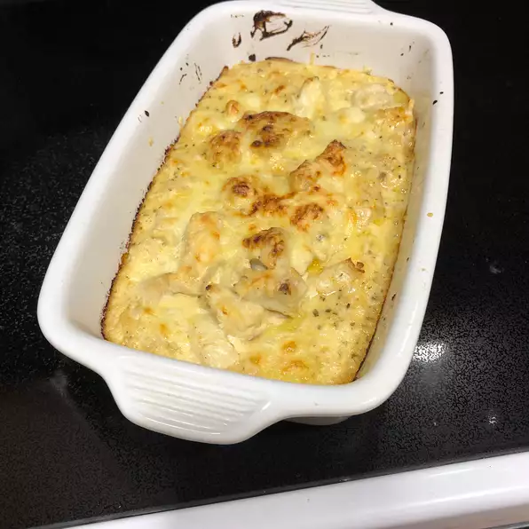

Creamy Cod and Potato Gratin

Description
A dish that takes about an hour a half to make, but it is worth it and is made it for an individual size.
Ingredients
- 2 medium russet potatoes, peeled and quartered
- 2 (6 ounce) fillets cod
- 2 pinches cayenne pepper, divided, or to taste
- salt to taste
- 7 tablespoons unsalted butter, divided
- 2 tablespoons finely chopped shallot
- 1 cup heavy cream
- 2 teaspoons lemon zest
- 1 tablespoon fresh lemon juice
- 1 tablespoon chopped fresh tarragon
- 2 teaspoons freshly grated Parmigiano-Reggiano, or to taste
Steps
-
Place potatoes in a large pot of well-salted water and bring to a boil over high heat.
Reduce heat and simmer gently until tender, about 20 minutes.
-
While potatoes simmer, trim, bone, and cut the cod fillets across into 2-inch pieces.
-
Drain potatoes well and return to the pot.
Add a pinch of cayenne, salt, and 4 tablespoons butter. Mash until smooth.
-
Preheat the oven to 450 degrees F (230 degrees C). Grease 2 individual-sized casserole or baking dishes with 1 tablespoon butter.
Place both dishes on a baking sheet.
-
Transfer about 2/3 cup of the mashed potatoes into each of the prepared dishes. Smooth out evenly and make a shallow depression with a spoon down the middle.
Set aside.
-
Heat remaining 2 tablespoons butter in a deep 10-inch skillet over medium-high heat.
Cook the shallots in the hot butter with a pinch of salt until they just start to turn golden, 3 to 4 minutes.
Add cream, lemon zest, and a pinch of cayenne, and bring to a simmer.
Add cod and wait for the sauce to come back to a simmer.
Cook for 1 minute, while basting with the sauce; turn and cook for 1 minute more.
-
Pour in lemon juice and turn off the heat; stir for about 30 seconds.
-
Divide the pieces of cod over the potato. Add enough sauce to just cover the fish and return the pan to the stove.
-
Bring sauce to a boil over medium-high heat and cook until the sauce reduces and thickens, 1 to 2 minutes.
Turn off the heat and stir in tarragon.
-
Spoon the thickened sauce over the cod. Add a light dusting of Parmigiano-Reggiano cheese.
-
Bake in the center of the preheated oven until cod is cooked through and the sauce is browned and bubbling, 10 to 15 minutes. Let rest for 5 minutes before serving.
Go back